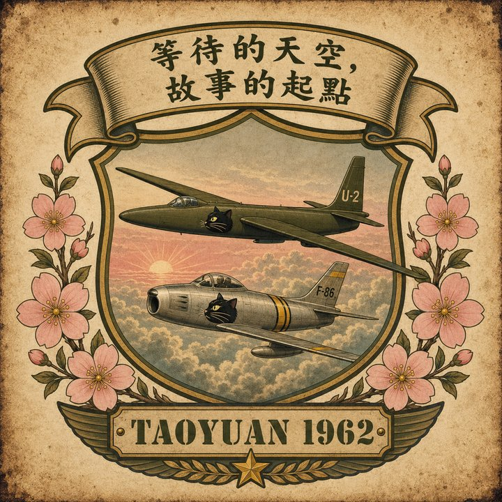
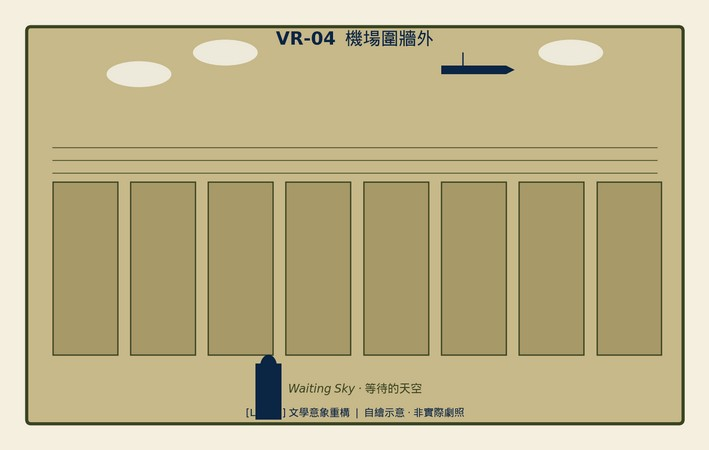
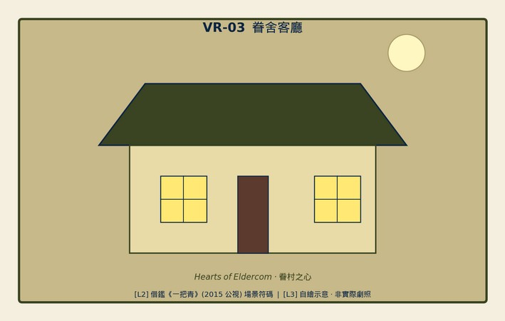
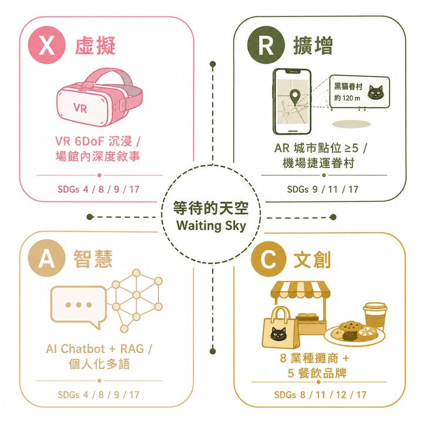
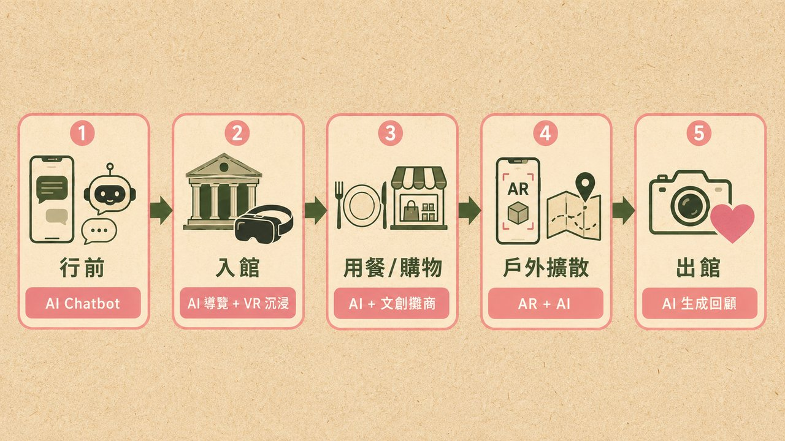

等待的天空 · 故事的起點
Waiting Sky · Where Every Story Begins
穿越 1962 與 2026 的桃園天空，每一次起飛與降落都是一場等待的詩。
借鑑《一把青》場景符碼，水彩手繪示意 — 1962 桃園空軍基地圍牆外的等待 / 眷舍裡的煤油燈與軍眷茶杯。


「等待，不只是個體的時間，也是城市的時間。」
本案 67% 預算雖投入沉浸式技術（投影 + VR + AI），但場域核心始終是人。 技術為輔助，真實人際互動才是文創園區的溫度來源。
三家餐廳由眷村二代擔任主廚顧問，菜色經家族食譜認證，每週「廚房說書」開放預約 — 由廚師親自講述外省家鄉菜的時代故事。
每月 4 場「見證者下午茶」由黑貓退役者親自帶觀眾走過展區，分享 U-2 任務記憶（限額 20 人 / 場，免費；同步錄影納入口述史 corpus）。
8 業種攤商每月須舉辦 ≥ 1 場「文化說書」（招商手冊明定），由攤主分享商品背後的時代故事，建立顧客情感連結。
每週六「復古打字機家書」工作坊，現場親手寫一封信給家人，可寄回家鄉地址 — 1962 軍郵格式（限額 30 人；票價 NT$200，含郵資）。
★ 在地就業 110 人 Y5（眷村二代/退役見證者/攤商/餐飲服務員）= 不可被 AI 取代的人際溫度
以 XR + AI 為時空艙，以文創園區為時代街區；讓觀眾穿越冷戰天空，並在眷村餐桌延續記憶。

行前 → 入館 → 戶外 → 出館 · 一張圖看完整動線

v9.4 最終送件版：接駁專車主路徑 + 七營收柱 + Tapas Box Peak Load · Y3 中估 33,080 萬 · 五年 NPV +11.22 億
★ 誠實聲明：本案數字為「業界實務 P10/P50/P90 區間估算」，非保證達成；正式報價可填入「中估」並更新區間
個人化推薦、票務客服、行前知識
動線推薦、深度敘事、情緒適應
攤商推薦、餐飲時代故事推送
城市點位探索、集章兌獎
體驗摘要、社群短影音、回訪推薦
桃園被「機場過境地」與「工業重鎮」二元覆蓋，缺乏旅客「願意停留」的文化錨點。航空文化城市為空白市場。
VR 提供場館內深度沉浸 · AR 提供城市擴散 · AI(RAG) 提供個人化對話。三者非互斥而是接力。
8 大攤商業種 + 5 大餐飲品牌 = 「歷史→體驗→消費→記憶」閉環。停留 ≥3 小時。
ESG 不是附加章節而是設計原則。對應 SDGs 6 項 (4/8/9/11/12/17)。
2026 為四時間軸交集 — 航空城建設、見證者高齡化、XR/AI 拐點、ESG 政策窗口。